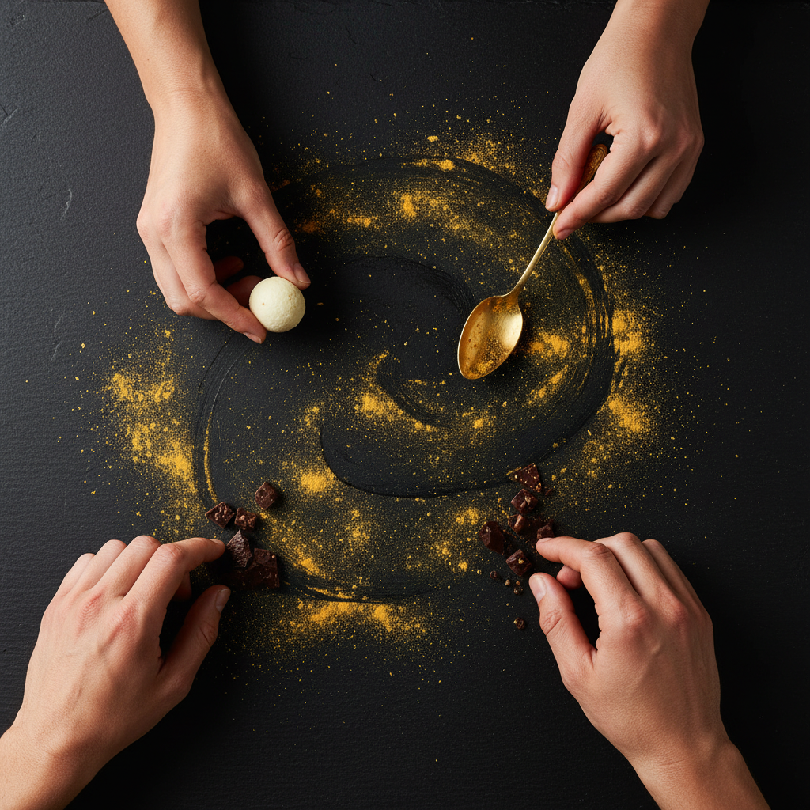

Dos personas, una visión compartida: transformar la cocina en emoción.
Somos Monica Canal y Guillermo Lobo, dos emprendedores que encontraron en la gastronomía un lenguaje común. Venimos de lugares distintos —Cantabria y León— pero compartimos una misma vocación: crear experiencias que permanezcan en la memoria.
Nuestro proyecto nació de conversaciones largas, cuadernos llenos de ideas y una pasión que no dejaba de crecer. Queríamos un restaurante que no solo alimentara, sino que emocionara. Un espacio donde cada plato contara una historia y cada detalle tuviera un propósito.

Creemos en una cocina honesta, creativa y profundamente humana. En Ceniza & Oro cada ingrediente tiene un origen, cada técnica un porqué y cada plato una intención.
La gastronomía es nuestra forma de expresarnos. Cocinamos con dedicación, respeto y una curiosidad que nunca se apaga.
Nos gusta experimentar, reinterpretar y sorprender. La tradición es nuestro punto de partida, no nuestro límite.
Creemos en el trato cercano, en escuchar, en cuidar. Cada persona que entra en nuestro restaurante forma parte de nuestra historia.
Crear un espacio donde la gastronomía se viva con los cinco sentidos. Donde cada visita sea un momento especial, un recuerdo cálido, un viaje emocional.
Reserva tu experiencia